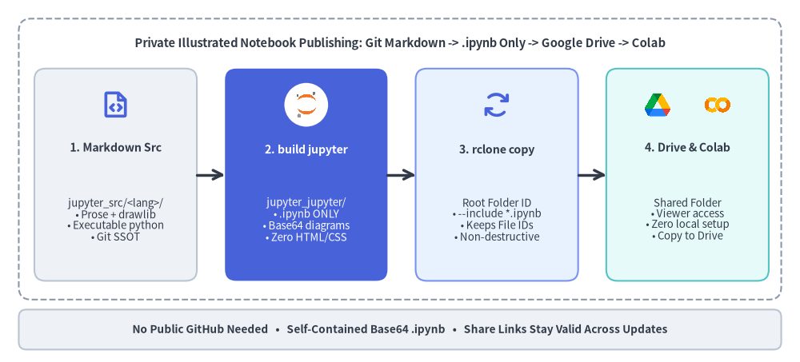
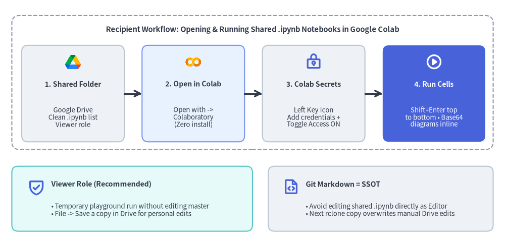

Google Drive + Colab 共有ガイド (rclone)
機密性の高い顧客向け納品物・クローズド案件・社内チーム配布など、GitHub の公開リポジトリを使えないケースでは、Drawlib の .ipynb 専用ビルド（drawlib build jupyter） と rclone を組み合わせることで、自己完結型の .ipynb ノートブックを Google Drive 共有フォルダへ自動公開し、利用者が Google Colab でそのまま実行するワークフロー を構築できます。

Source Code
from drawlib.canvas import save, setup
from drawlib.icons import ai, code as code_icons, phosphor, workspace
from drawlib.lines import line
from drawlib.shapes import circle, rectangle
from drawlib.styles import Styles
from drawlib.text import text
setup(width=128, height=58)
# Outer workflow container
rectangle((64, 32.5), width=122, height=45, style=Styles.MutedDashed.patch(shape_r=2.0))
text(
(64, 51.0),
"Private Illustrated Notebook Publishing: Git Markdown -> .ipynb Only -> Google Drive -> Colab",
style=Styles.DarkBold.patch(text_size=10.6),
)
# Stage 1: Markdown Source
rectangle((18.5, 30.0), width=26, height=34, style=Styles.Neutral.patch(shape_r=1.8))
phosphor.file_code((18.5, 41.2), width=4.8, style=Styles.PrimaryBold)
text((18.5, 34.4), "1. Markdown Src", style=Styles.DarkBold.patch(text_size=10.2))
text(
(18.5, 22.8),
"jupyter_src/<lang>/\n• Prose + drawlib\n• Executable python\n• Git SSOT",
style=Styles.Dark.patch(text_size=9.5),
)
line((31.5, 30.0), (36.0, 30.0), arrow_head="->", style=Styles.DarkBold)
# Stage 2: drawlib build jupyter (.ipynb only — Focal Hero)
rectangle((49.0, 30.0), width=26, height=34, style=Styles.PrimaryFlat.patch(shape_r=1.8))
circle((49.0, 41.2), radius=3.5, style=Styles.White.patch(shape_line_width=0))
ai.jupyter((49.0, 41.2), width=4.6, style=Styles.Neutral)
text((49.0, 34.0), "2. build jupyter", style=Styles.WhiteBold.patch(text_size=10.2))
text(
(49.0, 22.8),
"jupyter_jupyter/\n• .ipynb ONLY\n• Base64 diagrams\n• Zero HTML/CSS",
style=Styles.White.patch(text_size=9.5),
)
line((62.0, 30.0), (66.5, 30.0), arrow_head="->", style=Styles.DarkBold)
# Stage 3: rclone copy
rectangle((79.5, 30.0), width=26, height=34, style=Styles.PrimaryNeutral.patch(shape_r=1.8))
phosphor.arrows_clockwise((79.5, 41.2), width=4.8, style=Styles.PrimaryBold)
text((79.5, 34.0), "3. rclone copy", style=Styles.DarkBold.patch(text_size=10.2))
text(
(79.5, 22.8),
"Root Folder ID\n• --include *.ipynb\n• Keeps File IDs\n• Non-destructive",
style=Styles.Dark.patch(text_size=9.5),
)
line((92.5, 30.0), (97.0, 30.0), arrow_head="->", style=Styles.DarkBold)
# Stage 4: Google Drive -> Google Colab
rectangle((110.0, 30.0), width=26, height=34, style=Styles.SecondaryNeutral.patch(shape_r=1.8))
workspace.google_drive((105.2, 41.2), width=4.6, style=Styles.Neutral)
code_icons.colab((114.8, 41.2), width=4.6, style=Styles.Neutral)
text((110.0, 34.4), "4. Drive & Colab", style=Styles.DarkBold.patch(text_size=10.2))
text(
(110.0, 22.8),
"Shared Folder\n• Viewer access\n• Zero local setup\n• Copy to Drive",
style=Styles.Dark.patch(text_size=9.5),
)
# Bottom key-guarantees ribbon
rectangle(
(64, 5.2),
width=122,
height=6.4,
style=Styles.Neutral.patch(shape_r=1.2),
text="No Public GitHub Needed • Self-Contained Base64 .ipynb • Share Links Stay Valid Across Updates",
text_style=Styles.DarkBold.patch(text_size=9.8),
)
save()
1. 概要とこの方式のメリット
顧客向けの分析プレイブック・社内研修教材・検証手順書などを配布する際、機密保持やセキュリティポリシーの都合で GitHub の公開リポジトリを利用できないケースは多くあります。環境依存の FUSE マウントではなく、OS・CI を問わず動作する rclone と Drawlib の jupyter プロジェクトを組み合わせることで、安全かつ再現性の高いクローズド配布フローを実現できます。
.ipynbのみのクリーンな出力（drawlib build jupyter）: Drawlib は単一のdrawlib.tomlから、drawlib build jupyter（.ipynbのみをjupyter_jupyter/<lang>/**/*.ipynbに出力、HTML/CSS/外部画像なし）、drawlib build html（2 カラム HTML プレビュー＋同梱.ipynbをjupyter_html/に出力）、drawlib build image（図解 PNG をjupyter_images/に抽出）を明確に使い分けられます。Google Drive 共有時はbuild_jupyter.shを使うだけで.ipynbのみのクリーンな出力フォルダが得られます。.ipynb単体で 100% 自己完結:cell=markdownの```drawlib図解およびローカル Markdown 画像（_assets/...）はすべて Base64 Data URI（<img src="data:image/...;base64,..." />）として.ipynb内に自動埋め込みされるため、外部画像サーバー不要で Google Colab 上にそのまま表示されます。- 利用者の実行セルを Drawlib 非依存にできる:
drawlib_cell_mode = "markdown"（既定）により、アーキテクチャ解説図の生成にのみ Drawlib を使い、利用者が Colab 上で実行する Python セルは標準ライブラリ・Pandas・クラウド SDK 等だけで完結させられます（利用者側でのpip install drawlibは不要）。 - 共有リンクを壊さずに最新化（
rclone copy）:rclone copyによる上書き更新では Google Drive 上の File ID が維持 されるため、顧客やチームへ共有済みのリンク URL を変更することなく継続的に最新化できます。
（jupyter プロジェクトの基本構造・デュアルコードブロック構文・setup(..., cwd=True) については、Jupyter ノートブックプロジェクトガイド を参照してください。）
2. Step 1: rclone のインストールと Google Drive リモート設定
作業端末（または CI ランナー）へ rclone をインストールします。
# macOS (Homebrew):
brew install rclone
# Linux (公式インストールスクリプト):
curl https://rclone.org/install.sh | sudo bash
# Windows (winget):
winget install Rclone.Rclone
次に rclone config を実行し、Google Drive 用のリモート（例: gdrive）を作成します。
- 新規リモート作成:
nを選択し、リモート名にgdrive、Storage にdrive（Google Drive）を選択します。 - 独自 OAuth 認証情報の設定（継続運用で強く推奨）:
client_id/client_secretは空欄のままでも試せますが、rclone 共有の既定クライアントはレート制限に掛かりやすいため、継続運用やチーム共有では自身の Google Cloud プロジェクトで Google Drive API を有効化して取得した OAuthclient_id/client_secretの設定を推奨します。 - スコープ設定: 既存の共有フォルダへ書き込むため、
1（scope = drive）を選択します。 - 認証の完了:
- ブラウザが開けるローカル環境では
auto config = yを選択し、ブラウザで認証します。 - SSH 先や devcontainer などのヘッドレス環境では
auto config = nを選び、ブラウザのある手元端末でrclone authorize "drive"を実行して出力されたトークン JSON を貼り付けます。
- ブラウザが開けるローカル環境では
- 公開先フォルダ種別ごとの設定（マイドライブ / 共有アイテム / 共有ドライブ）: 公開先 Google Drive フォルダの URL（
https://drive.google.com/drive/folders/<FOLDER_ID>）から<FOLDER_ID>を取得し、配置場所に応じて以下のように設定します。
| Google Drive 上の配置先 | rclone config（team_drive） |
CLI フラグ・挙動 |
|---|---|---|
| マイドライブ配下のフォルダ | team_drive は 空（Shared Drive 質問は n） |
--drive-root-folder-id="<FOLDER_ID>" を指定。 |
| 共有アイテム（他者所有の共有フォルダ） | team_drive は 空 |
--drive-root-folder-id="<FOLDER_ID>" を指定（対象フォルダに対する 編集者 権限が必要）。 |
| Google Workspace 共有ドライブ直下 | "Configure this as a Shared Drive?" で y を選び対象ドライブを指定（team_drive = <DRIVE_ID>） |
--drive-root-folder-id は省略可（リモート直下が共有ドライブになる）、または --drive-team-drive="<DRIVE_ID>" を使用。 |
| 共有ドライブ内のサブフォルダ | --drive-root-folder-id 指定時は team_drive を 空 にする |
--drive-root-folder-id="<SUBFOLDER_ID>" を指定（rclone では非空の team_drive と root_folder_id の併用で 404 や権限不整合になる場合があるため、下の rclone lsf で必ず疎通確認してください）。 |
パス指定（gdrive:Client/Notebooks）ではなく --drive-root-folder-id="<FOLDER_ID>" を使う理由:
- フォルダ名変更に強い: Google Drive 側でフォルダ名を変更・移動しても同期が壊れません。
- 親フォルダへの誤書き込み防止: 書き込みスコープを対象
<FOLDER_ID>配下に厳密に閉じ込められます。 - 配置場所を問わず統一運用可能: マイドライブ配下・共有フォルダ・共有ドライブ配下のいずれでも同じインターフェースで扱えます。
スクリプト組み込み前に接続確認を行います。
# 公開先 Google Drive フォルダ内の既存ファイル一覧を取得（終了コード 0 になれば OK）:
rclone lsf gdrive: --drive-root-folder-id="<FOLDER_ID>"
補足 — Google Drive 上の同名ファイル重複への対処: Google Drive は同一フォルダ内に同名ファイルを複数置ける仕様です。過去に手動アップロードした
.ipynbが重複している場合は、自動同期前にrclone dedupe gdrive: --drive-root-folder-id="<FOLDER_ID>" --dry-runで重複がないか確認しておくと安全です。
3. Step 2: Drawlib jupyter プロジェクトの設定（.ipynb 専用ビルド）
単一言語または多言語の jupyter プロジェクトを初期化します。
# 単一言語プロジェクトを作成（jupyter_src/ja/ を生成）:
uv run drawlib init project jupyter -l ja -s google
# または日英バイリンガルプロジェクトを作成（jupyter_src/en/ と jupyter_src/ja/ を生成）:
uv run drawlib init project jupyter -l en,ja -s google
Google Drive 共有向けに jupyter_src/drawlib.toml を設定します。
[project]
name = "jupyter"
type = "jupyter"
title = "顧客向けデータ分析プレイブック"
description = "Google Drive 共有フォルダ経由で配布する Google Colab ノートブック集。"
style = "google"
[i18n]
default_lang = "ja"
langs = ["ja"]
[jupyter]
# Google Drive 共有時は colab_base_url を未設定（空）にします！
# GitHub URL が入っていると Drive 上の .ipynb 先頭にリンク切れの "Open in Colab" バッジが埋め込まれます。
# colab_base_url = ""
drawlib_cell_mode = "markdown" # ```drawlib を Base64 埋め込み済みの解説図解として出力
execute = false # 標準 Python のローカル Dry-Run 用は true、google.colab / 対話認証を含む場合は false
Google Drive + Colab 運用での設定ポイント:
colab_base_urlは未設定（空）にする:colab_base_urlを指定すると.ipynb先頭にその URL へのOpen in Colabバッジが自動挿入されます。Drive 共有方式では外部リンクが不要（かつリンク切れの原因）になるため必ずコメントアウトしてください。execute = trueとexecute = falseの使い分け（および--dry-runの挙動差）:- 標準 Python のみで完結するノートブックは
execute = trueにすると、ビルド時に全コードセルの例外ゼロ・[Geometry Warning]ゼロを自動検証できます。 google.colab（userdata・auth・drive.mount）や対話的クラウド認証を含むノートブックはexecute = falseにします。execute = falseでもcell=markdownの```drawlib図解レンダリングと[Geometry Warning]検査は通常通り実行されます。- なお、
drawlib build jupyter --dry-runはexecute = falseでもコードセル実行を強制 します。Colab 専用ノートブックでもローカル--dry-runを通したい場合は、以下のようにフォールバックを書いておくと便利です。
- 標準 Python のみで完結するノートブックは
import os
try:
from google.colab import userdata
API_KEY = userdata.get("MY_API_KEY")
except ImportError:
API_KEY = os.environ.get("MY_API_KEY", "dry-run-placeholder")
- 図解が多い場合の軽量化（
-f webp）: PNG の Base64 埋め込みで.ipynbファイルサイズが大きくなると Colab での読み込みが重くなることがあります。drawlib build jupyter -f webpを使うと画質を保ったままファイルサイズを大幅に削減できます。 - 単一言語（フラット配置）vs 多言語（言語別フォルダ）:
drawlib build jupyterは常にjupyter_jupyter/<lang>/*.ipynbを出力します。単一言語（例:langs = ["ja"]）なら同期元をjupyter_jupyter/jaにすると Google Drive フォルダ直下に.ipynbがフラットに並び、多言語（langs = ["en", "ja"]）ならjupyter_jupyterを指定すると Drive 側で自動的にen/・ja/フォルダが切られます。 - リネーム・削除済みの古い
.ipynbを残さない小技: ソースの.mdを削除・改名した際にローカル出力先へ古い.ipynbが残らないよう、jupyter_src/build_jupyter.shで--dry-runおよびカスタム-o指定時以外に限り出力ディレクトリをクリーンにしてからビルドします。
# jupyter_src/build_jupyter.sh 内（$DRAWLIB_CMD build jupyter 呼び出し前）:
IS_DRY_RUN=0
HAS_CUSTOM_OUT=0
for arg in "$@"; do
case "$arg" in
--dry-run) IS_DRY_RUN=1 ;;
-o|--output|--output=*) HAS_CUSTOM_OUT=1 ;;
esac
done
if [ "$IS_DRY_RUN" -eq 0 ] && [ "$HAS_CUSTOM_OUT" -eq 0 ] && [ -d "jupyter_jupyter" ]; then
rm -rf "jupyter_jupyter"
fi
$DRAWLIB_CMD build jupyter jupyter_src/ -o jupyter_jupyter/ "$@"
認証情報・フォルダ ID・ビルド生成物は Git 管理外にするため、リポジトリの .gitignore に以下を追記します。
# ビルド生成物（Git ではなく Google Drive へ同期配信）
jupyter_jupyter/
jupyter_html/
jupyter_images/
# ローカル環境変数および rclone / GCP 認証情報 — 絶対にコミットしない！
.env
.env.local
rclone.conf
*-service-account*.json
4. Step 3: sync_gdrive.sh と build.sh の自動連携
フォルダ ID をリポジトリへハードコードせず環境変数（または Git 管理外の .env）から読み込む jupyter_src/sync_gdrive.sh を作成します。
#!/usr/bin/env bash
set -euo pipefail
SCRIPT_DIR="$(cd "$(dirname "${BASH_SOURCE[0]}")" && pwd)"
PARENT_DIR="$(cd "$SCRIPT_DIR/.." && pwd)"
cd "$PARENT_DIR"
# Git 管理外のローカル .env があれば読み込み
if [ -f ".env" ]; then
set -a
# shellcheck source=/dev/null
source ".env"
set +a
fi
RCLONE_REMOTE="${RCLONE_REMOTE:-gdrive}"
GDRIVE_FOLDER_ID="${GDRIVE_FOLDER_ID:-}"
# 単一言語: "jupyter_jupyter/ja"（Drive 直下にフラット配置）| 多言語: "jupyter_jupyter"（en/・ja/ 階層）
JUPYTER_SRC_DIR="${JUPYTER_SRC_DIR:-jupyter_jupyter/ja}"
# 既定は非破壊の "copy"（File ID 維持・Drive 側の既存ファイル誤削除防止）。
# 削除ミラーリングは明示的に GDRIVE_SYNC_MODE=sync を指定（事前に必ず --dry-run で確認！）。
GDRIVE_SYNC_MODE="${GDRIVE_SYNC_MODE:-copy}"
if ! command -v rclone &> /dev/null; then
echo "Error: rclone がインストールされていません。https://rclone.org/install/ を参照してください。" >&2
exit 1
fi
if [ -z "$GDRIVE_FOLDER_ID" ]; then
echo "Error: GDRIVE_FOLDER_ID が未設定です（環境変数または .env に設定してください）。" >&2
exit 1
fi
if [ ! -d "$JUPYTER_SRC_DIR" ]; then
echo "Error: 同期元ディレクトリ '$JUPYTER_SRC_DIR' が見つかりません。先に ./jupyter_src/build_jupyter.sh を実行してください。" >&2
exit 1
fi
if [ "$GDRIVE_SYNC_MODE" != "copy" ] && [ "$GDRIVE_SYNC_MODE" != "sync" ]; then
echo "Error: GDRIVE_SYNC_MODE には 'copy' または 'sync' を指定してください（指定値: '$GDRIVE_SYNC_MODE'）。" >&2
exit 1
fi
echo "Google Drive へ .ipynb を同期中 ($GDRIVE_SYNC_MODE): $JUPYTER_SRC_DIR -> ${RCLONE_REMOTE}: (folder=$GDRIVE_FOLDER_ID)"
rclone "$GDRIVE_SYNC_MODE" \
"$JUPYTER_SRC_DIR" \
"${RCLONE_REMOTE}:" \
--drive-root-folder-id="${GDRIVE_FOLDER_ID}" \
--include "*.ipynb" \
--stats-one-line \
-v \
"$@"
.ipynb専用ビルドなのに--include "*.ipynb"を残す理由（安全装置）:drawlib build jupyterの出力自体はすでに.ipynbのみですが、rclone側にも--include "*.ipynb"を付けておくことで Drive 側の他ファイルを保護する安全装置 になります。将来GDRIVE_SYNC_MODE=sync ./jupyter_src/sync_gdrive.shで削除同期を行う場合でも、--include "*.ipynb"があれば顧客やメンバーが同じ共有フォルダへ置いた Google ドキュメント・スプレッドシート・PDF・CSV データを誤削除しません。なお、sync実行前は必ずGDRIVE_SYNC_MODE=sync ./jupyter_src/sync_gdrive.sh --dry-runで削除対象を確認してください。
続いて jupyter_src/build.sh を拡張し、.ipynb ビルド完了後に sync_gdrive.sh を自動呼び出しします。--no-sync は build.sh 側で消費してから残り引数のみを build_jupyter.sh へ転送し、--dry-run・オフライン・未設定環境では安全にスキップするガードを入れます。
#!/usr/bin/env bash
set -euo pipefail
SCRIPT_DIR="$(cd "$(dirname "${BASH_SOURCE[0]}")" && pwd)"
SKIP_SYNC="${SKIP_GDRIVE_SYNC:-0}"
IS_DRY_RUN=0
BUILD_ARGS=()
for arg in "$@"; do
case "$arg" in
--no-sync)
SKIP_SYNC=1
;;
--dry-run)
IS_DRY_RUN=1
BUILD_ARGS+=("$arg")
;;
*)
BUILD_ARGS+=("$arg")
;;
esac
done
echo "=== 単体 Jupyter ノートブック (.ipynb のみ) をビルド ==="
"$SCRIPT_DIR/build_jupyter.sh" "${BUILD_ARGS[@]}"
if [ "$IS_DRY_RUN" -eq 1 ]; then
echo "Google Drive 同期をスキップします (--dry-run)。"
exit 0
fi
if [ "$SKIP_SYNC" = "1" ]; then
echo "Google Drive 同期をスキップします (--no-sync / SKIP_GDRIVE_SYNC=1)。"
exit 0
fi
if ! command -v rclone &> /dev/null; then
echo "Google Drive 同期をスキップします (rclone 未インストール)。"
exit 0
fi
if [ -z "${GDRIVE_FOLDER_ID:-}" ] && [ ! -f "$SCRIPT_DIR/../.env" ]; then
echo "Google Drive 同期をスキップします (GDRIVE_FOLDER_ID 未設定)。"
exit 0
fi
echo "=== Google Drive 共有フォルダへ .ipynb を同期 ==="
"$SCRIPT_DIR/sync_gdrive.sh"
echo "=== ビルドおよび Google Drive 同期が完了しました！ ==="
（執筆中にローカルのブラウザで HTML プレビューを確認したい場合は、いつでも ./jupyter_src/build_html.sh と ./jupyter_src/serve.sh を実行できます。出力先は jupyter_html/ に分離されるため、Drive 同期用の jupyter_jupyter/ には影響しません。）
5. Step 4: 利用者（顧客・チームメンバー）側の Google Colab 実行フロー
Google Drive へ同期されたノートブックは、利用者側に Git や Python 環境・Drawlib のセットアップを一切求めず、ブラウザだけで完結して実行できます。

Source Code
from drawlib.canvas import save, setup
from drawlib.icons import code as code_icons, phosphor, workspace
from drawlib.lines import line
from drawlib.shapes import rectangle
from drawlib.styles import Styles
from drawlib.text import text
setup(width=128, height=62)
# Top Panel: 4-Step Recipient Execution Flow
rectangle((64, 41.0), width=122, height=34, style=Styles.MutedDashed.patch(shape_r=2.0))
text(
(64, 54.4),
"Recipient Workflow: Opening & Running Shared .ipynb Notebooks in Google Colab",
style=Styles.DarkBold.patch(text_size=10.6),
)
steps = [
(18.5, "1. Shared Folder", "Google Drive\nClean .ipynb list\nViewer role", Styles.Neutral, Styles.DarkBold, Styles.Dark, "drive"),
(49.0, "2. Open in Colab", "Open with ->\nColaboratory\n(Zero install)", Styles.PrimaryNeutral, Styles.DarkBold, Styles.Dark, "colab"),
(79.5, "3. Colab Secrets", "Left Key Icon\nAdd credentials +\nToggle Access ON", Styles.Neutral, Styles.DarkBold, Styles.Dark, "key"),
(110.0, "4. Run Cells", "Shift+Enter top\nto bottom • Base64\ndiagrams inline", Styles.PrimaryFlat, Styles.WhiteBold, Styles.White, "play"),
]
for cx, title, body, st, tst, bst, icon_kind in steps:
rectangle((cx, 38.2), width=26, height=24.5, style=st.patch(shape_r=1.6))
if icon_kind == "drive":
workspace.google_drive((cx, 46.2), width=4.4, style=Styles.Neutral)
elif icon_kind == "colab":
code_icons.colab((cx, 46.2), width=4.4, style=Styles.Neutral)
elif icon_kind == "key":
phosphor.lock_key((cx, 46.2), width=4.4, style=Styles.PrimaryBold)
else:
phosphor.play_circle((cx, 46.2), width=4.4, style=Styles.WhiteBold)
text((cx, 40.6), title, style=tst.patch(text_size=10.0))
text((cx, 32.2), body, style=bst.patch(text_size=9.5))
for x0, x1 in ((31.5, 36.0), (62.0, 66.5), (92.5, 97.0)):
line((x0, 38.2), (x1, 38.2), arrow_head="->", style=Styles.DarkBold)
# Bottom Panel: Permission & Single Source of Truth Guardrails
rectangle((33.5, 11.5), width=61, height=16.5, style=Styles.SecondaryNeutral.patch(shape_r=1.6))
phosphor.shield_check((9.2, 14.5), width=4.6, style=Styles.PrimaryBold)
text((13.0, 15.2), "Viewer Role (Recommended)", style=Styles.DarkBold.patch(text_size=10.2, halign="left"))
text(
(13.0, 8.6),
"• Temporary playground run without editing master\n• File -> Save a copy in Drive for personal edits",
style=Styles.Dark.patch(text_size=9.5, halign="left"),
)
rectangle((96.5, 11.5), width=57, height=16.5, style=Styles.Neutral.patch(shape_r=1.6))
phosphor.file_code((73.8, 14.5), width=4.4, style=Styles.PrimaryBold)
text((77.5, 15.2), "Git Markdown = SSOT", style=Styles.DarkBold.patch(text_size=10.2, halign="left"))
text(
(77.5, 8.6),
"• Avoid editing shared .ipynb directly as Editor\n• Next rclone copy overwrites manual Drive edits",
style=Styles.Dark.patch(text_size=9.5, halign="left"),
)
save()
配布先の利用者には、以下の 5 ステップを案内します。
- Google Drive の共有フォルダを開く:
.ipynbファイルのみが連番（01_...、02_...）で並んだクリーンなフォルダが表示されます。 - Google Colaboratory で開く: 対象の
.ipynbをダブルクリック、または右クリック → 「アプリで開く」→「Google Colaboratory」 を選択します。- 初回未連携の場合: メニューに Colaboratory が表示されないときは 「アプリを追加」 を開き、Google Workspace Marketplace で
Colaboratoryを検索してインストールします。
- 初回未連携の場合: メニューに Colaboratory が表示されないときは 「アプリを追加」 を開き、Google Workspace Marketplace で
- 閲覧者（Viewer）権限で一時実行、またはマイドライブへコピー保存:
- 共有フォルダの権限は原則 「閲覧者（Viewer）」 を推奨します（機密保持のため「リンクを知っている全員」ではなく対象アカウントまたは Google グループを指定してください）。閲覧者でも Colab 上でそのまま一時実行でき、共有元の原本を誤って壊される心配がありません。
- 実行結果を残したりパラメータを改造して保存したい場合は、メニューの 「ファイル」→「ドライブにコピーを保存」 を使用します。
- 編集者（Editor）向けの注意: 編集の正本（Single Source of Truth）はあくまで Git 管理下の Markdown ソース（
jupyter_src/）です。Colab 上で共有フォルダ内の.ipynbを直接編集しても、次回のrclone copyで上書きされる点に注意してください。
- シークレット設定（クラウド認証や API キーを使うノートブックの場合）:
- Colab 左サイドバーの 鍵アイコン（シークレット） を開きます。
- 必要なシークレット名と値を登録し、「ノートブックからのアクセス」トグルを ON にします（コードセルから
google.colab.userdata.get("<KEY>")で安全に読み込めます）。
- 上からセルを順次実行:
Shift + Enter（または 「ランタイム」→「すべてのセルを実行」）で実行します。Drawlib の説明図は Base64 埋め込み済みのため、追加インストール不要でそのまま鮮明に表示されます。- 外部データやノートブック間リンクの補足: 図解画像は
.ipynb単体で完結しますが、コードセルが読み込む CSV / Parquet 等のデータファイルはgoogle.colab.drive.mount('/content/drive')や GCS / BigQuery / API 経由で取得する設計にしてください。また、Markdown 内の相対リンク（./02_next.md）は Colab 上では Drive の File ID へ解決されないため、ファイル名連番（01_...、02_...）で順に案内する構成が適しています。
- 外部データやノートブック間リンクの補足: 図解画像は
6. 補足: CI（GitHub Actions）からの自動公開
main ブランチへのマージをトリガーに .ipynb のビルドと Google Drive 同期を完全自動化したい場合は、Google Cloud の サービスアカウント を作成し、公開先の Google Drive 共有フォルダ 1 つだけに対して「編集者」権限で共有（最小権限）した上で、GitHub Actions から drawlib build jupyter → rclone copy を実行します。
name: Publish Jupyter Notebooks to Google Drive
on:
push:
branches: [main]
paths:
- "jupyter_src/**"
jobs:
publish-notebooks:
runs-on: ubuntu-latest
steps:
- uses: actions/checkout@v4
- name: Set up uv & Python
uses: astral-sh/setup-uv@v5
- name: Install rclone
run: curl -fsSL https://rclone.org/install.sh | sudo bash
- name: Build standalone .ipynb notebooks
run: uv run drawlib build jupyter jupyter_src/ -o jupyter_jupyter/
- name: Sync .ipynb notebooks to Google Drive
env:
GDRIVE_SA_JSON: ${{ secrets.GDRIVE_SERVICE_ACCOUNT_JSON }}
GDRIVE_FOLDER_ID: ${{ secrets.GDRIVE_FOLDER_ID }}
RCLONE_CONFIG_GDRIVE_TYPE: drive
RCLONE_CONFIG_GDRIVE_SCOPE: drive
run: |
SA_FILE="$(mktemp)"
trap 'rm -f "$SA_FILE"' EXIT
printf '%s' "$GDRIVE_SA_JSON" > "$SA_FILE"
chmod 600 "$SA_FILE"
export RCLONE_CONFIG_GDRIVE_SERVICE_ACCOUNT_FILE="$SA_FILE"
rclone copy jupyter_jupyter/ja gdrive: \
--drive-root-folder-id="${GDRIVE_FOLDER_ID}" \
--include "*.ipynb" \
-v
エンタープライズ環境向けのセキュリティ & キャッシュ補足:
- サービスアカウントキー作成が禁止されている組織: Google Cloud 組織ポリシーで
iam.disableServiceAccountKeyCreationが有効な場合は、静的 JSON キーを GitHub Secrets に置く代わりに Workload Identity Federation（google-github-actions/auth）で短命な OAuth アクセストークンを発行して連携する構成を検討してください。- CI ビルドの高速化: Drawlib の 2 層キャッシュ（
.drawlib/および~/.cache/drawlib/）をactions/cache@v4で永続化する手順は、キャッシュ機構と CI/CD を参照してください。